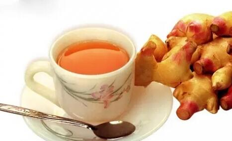

相传“八仙”之一的吕洞宾，行医到浙江萧山采药，目睹一青年在岩缝中捉到一只“夹板乌龟”，要给老母煮食补力气。吕洞宾想：“夹板乌龟”是极毒的，一旦吃下，那还了得！“奇怪的是，当他找到这位青年家中，见其年迈的老母却神情自若地在纺纱。吕洞宾迫不及待地询问老大娘。原来在烹调时，已将几片厚
生姜防病健身有殊功。民间流传有“冬吃
生姜自古就被养生家视为保健良药。早在2000多年前，
北宋大文豪、美食家苏东坡在杭州做父母官时，有一天独自一人便服游览西湖，他漫步在苏堤上，见百姓扶老携幼，来来往往，熙熙攘攘，心里十分高兴。只听百姓们交口称赞：“苏大人为官钱塘【即杭州】，造福西湖，利在千秋。只可惜像他这样的好官太少了！”他感到惭愧，觉得人生短暂，能做的事太少了。猛然想起不远处的净慈寺有位寿高体健的和尚值得拜访。放眼望去，那净慈寺掩映在“接天莲叶无穷碧，映日
方丈将苏东坡迎进禅堂，小和尚端来西湖龙井茶。苏东坡一边喝茶，一边问方丈：“听说你这里有位寿高身健的高僧，可得一见否？”方丈命小和尚叫来。只见那位高僧步履矫健，胸挺腰直，面色红润，目光炯炯，看上去不过四十来岁。方丈介绍说：“这就是人称‘聪药王’的本寺制药僧，前来拜见苏大人。”苏东坡忙起身让座，双手合十虔诚地问道：“久闻高僧身健寿高，今得一见，果然名不虚传。请问贵庚几何，何以如此不老？”
聪药王顿首回曰：“贫僧今年八十有五，四十岁时身体肥胖，臃肿不堪，步履艰难。后得一方做成乳饼，连吃四十余载，所以不老。”苏东坡问此方可得闻乎？乳饼如何制作？聪药王道：“苏大人造福民众，贫僧要将此方献给大人。此方只一味生姜，把姜捣烂，绞取姜汁，盛入瓷盆中，静置澄清，除去上层黄清液，取下层白而浓者，阴干，刮取其粉，名为‘姜乳’。一斤老姜约可得一两多姜乳，用此姜乳与3倍面粉拌和，做成饼蒸熟即成。每日空腹吃一二饼。我连吃两年就身轻体健了。后来遁入山门，我也日吃不断。看来姜乳饼将伴我终生。”
苏东坡拜谢了聪药王回到府上，心想姜乳饼制作较繁琐，加之他自幼生长在四川眉山，吃惯
一斤生姜半斤枣，半两白盐三两草，
也好，泡也好，修合此药胜如宝。
每日清晨饮一杯，一生容颜都不老。
“驻颜不老方”曾被收载于《苏沈良方》中，后来许多养生医籍均有转录，足见生姜对于抗衰美容的巨大功效。此方现代简便用法有二：一是每日晨起后取鲜生姜30克、
明末清初的思想家王夫之，一生爱姜成癖，他隐居乡下，所在的草堂叫“姜斋”，并自号“卖姜翁”。王夫之还写过一首《卖姜词》，在他看来，生姜“最疗
据分析，生姜含辛辣和芳香气味的挥发油。油中主要成分为姜醇、姜烯、姜油萜、姜酚、龙脑、芳樟醇、枸橼醛等。此外，生姜还含天门冬素、谷氨酸、天门冬氨酸、丝氨酸、甘氨酸、苏氨酸、丙氨酸等营养成分。现代医学研究，生姜有抗菌、抗癌作用，所含姜油酮和姜烯酮，对伤寒杆菌、痢疾杆菌、霍乱弧菌、
生姜中的姜辣素被人体吸收后，能产生一种抗氧化酶，它有很强的对付氧自由基的本领，比维生素e还要强得多，因而有防氧化、抗衰老作用。美国人发现生姜含有一种与水杨酸相似的特殊物质，提取这种物质，经稀释作为血液稀释剂，对降血脂、降血压、防止血栓形成及心肌梗死有特殊疗效。生姜还有抗风湿作用，丹麦奥丹斯大学教授奇斯纳说，风湿性关节炎患者连续食姜三个月，肿痛症状大大减少，关节僵硬现象可缓解；日本学者指出，每次吃三分之一茶匙的姜粉，每日3次，坚持吃上一段时间，对风湿性关节炎确有奇效。
此外，生姜能增进食欲，又可刺激口腔和胃黏膜，能加速消化液的分泌，对胃黏膜损伤有保护作用；生姜中的姜酚还有较强的利胆作用，可防治胆囊炎和胆石症；生姜提取物对四氯化碳性引起的肝损害有预防和治疗作用。生姜对防治晕动病、治疗妊娠呕吐皆有良效。
妙音
1、好多师兄每天懒得做饭吃饭就凑乎，尤其一些年纪大的和单身同修们，时间长了身体肯定出问题。本人就深有体会！
2、有一些
3、食物属性不清楚？就是我们每天吃的东西不管是水果蔬菜，五谷杂粮等等吧，有的是热性的，凉性的，平性的就是不寒不热。好多佛友本来就是寒性体质，吃多了寒性的食物（雪糕，喝冷饮，冰镇
4、吃全素的佛友我建议吃面食多一点最好多吃全麦面，米要吃
5、长年吃生姜，身体内的寒湿就无法立足，经络也就一直畅通，自然就没有明显的衰老和多病的情况出现。生姜性温能使血管扩张，血液循环加快同时还把体内的病菌、寒气一同带出，同时可以治疗男性前列腺炎等疾病。但是生姜唯一的不足之处就是常吃会引起肝火旺，别怕我教你一招！当你觉得上火时：用3～4朵菊花、
6、给大家推荐个套餐！早餐要注意营养的搭配，用